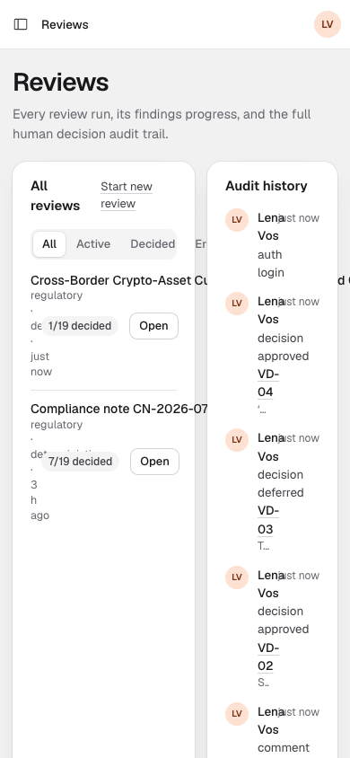
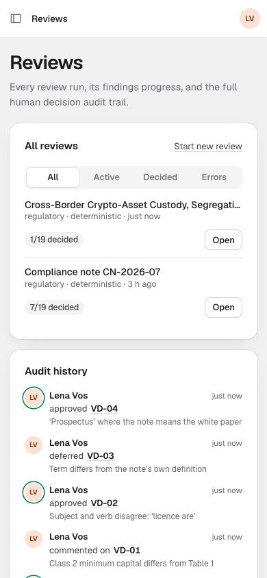
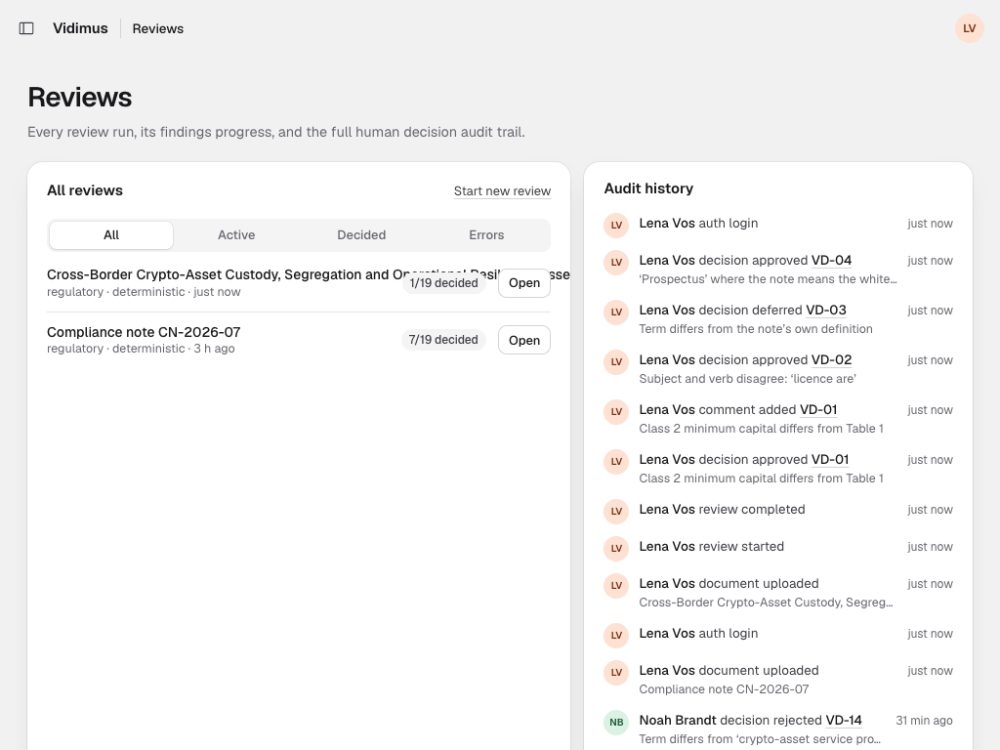
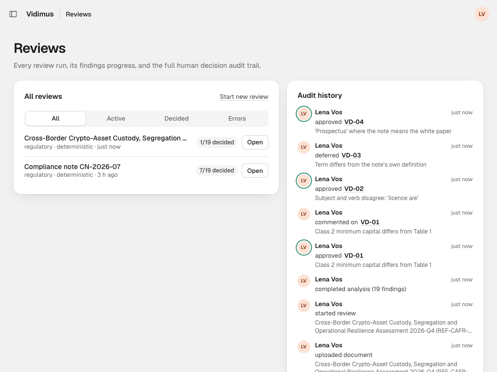
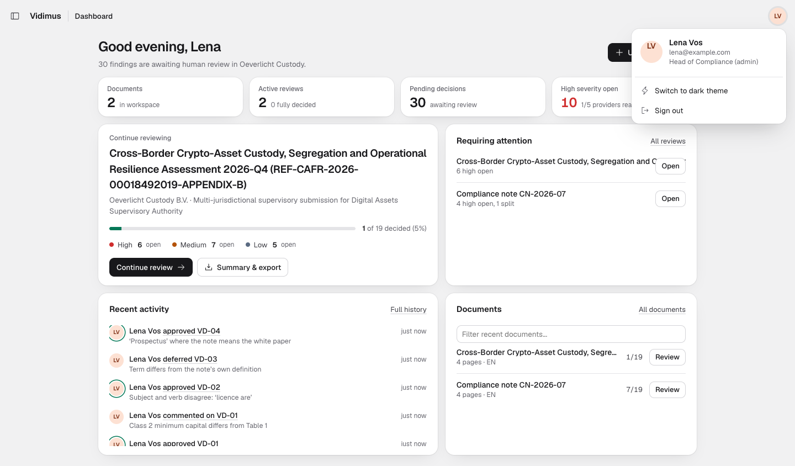
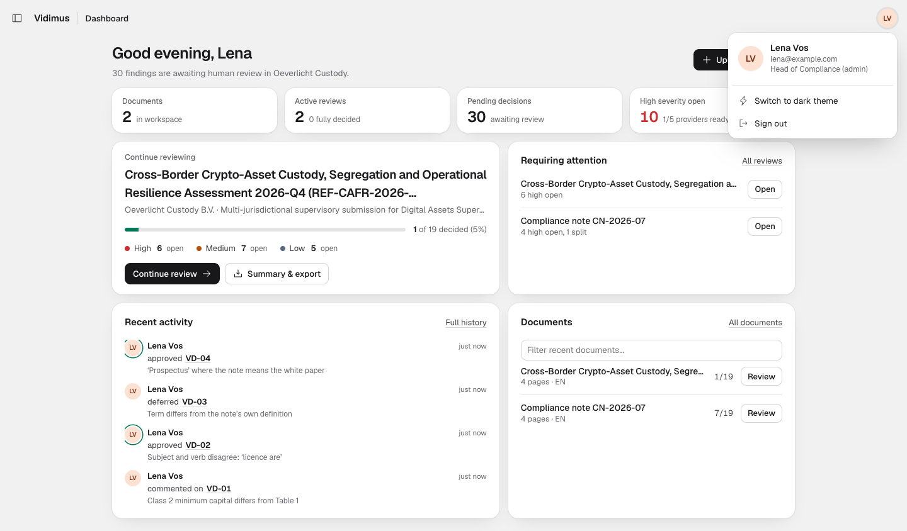
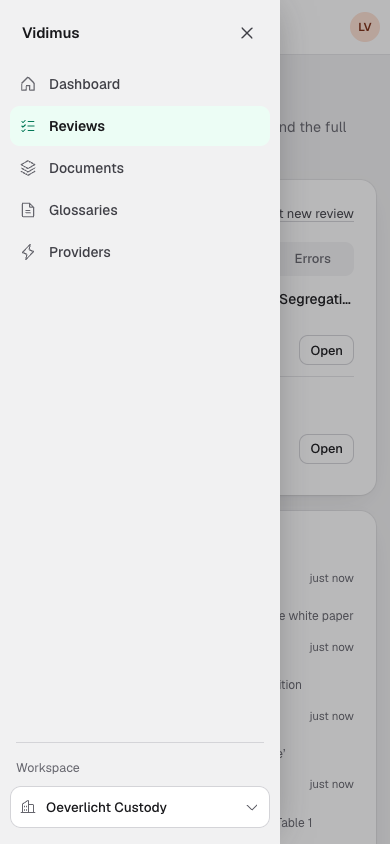
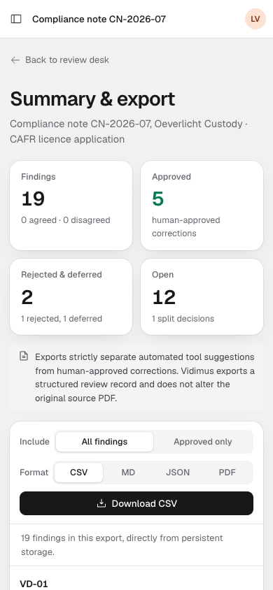
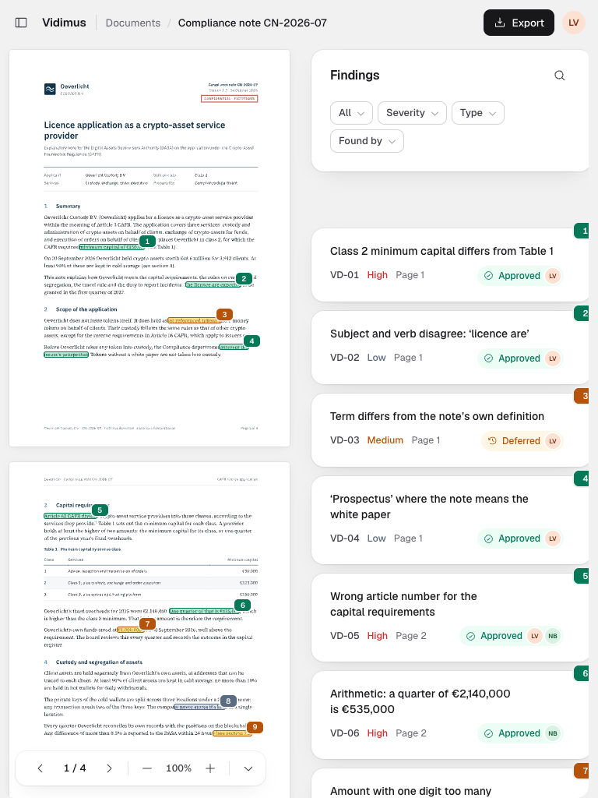
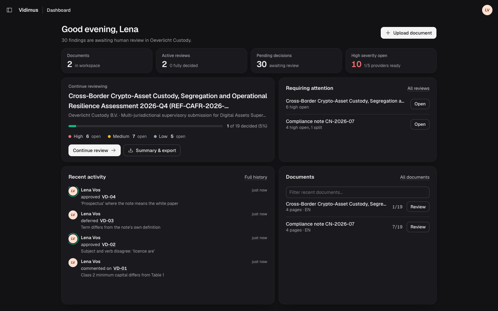

Vidimus Visual QA Report
Mission M-2026-11-002 · 14 viewports (320px to 1920px) · Light & Dark themes · 100% to 200% zoom · Stress fixtures
Viewport × Route Audits84
Defects Found10
Verified Fixed10 / 10
Open P0/P1/P2/P30
VQA-001 & VQA-002: Reviews & Audit History on Mobile (390px) Verified


VQA-002 & VQA-003: Audit History & Long Titles (1024px) Verified


VQA-004, VQA-009 & VQA-010: Account Menu & Desktop Dashboard (1440px) Verified


VQA-005 & VQA-007: Mobile Drawer & Export (390px) Verified


VQA-008 & Dark Theme Verification Verified

